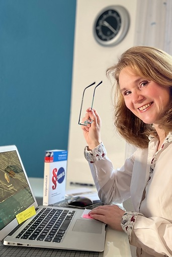

Über uns

Susanne Jorczik
Gewählte Vertrauensperson für schwerbehinderte Lehrkräfte bin ich mit Leib und Seele seit 2018.
Ich bin selbst schwerbehindert und habe deshalb viel Verständnis für Menschen mit Erkrankungen und Beeinträchtigungen.
Seit dem 12.02.2019 bin ich auch Vertrauensperson für schwerbehinderte Lehrkräfte an Gy WBKs und ZfsLs beim Ministerium für Schule und Weiterbildung in Vertretung für Herrn Jörg Bohmann.
Als Referendarin habe ich mit meinen Fächern Deutsch und Erdkunde Sek. I/II am 01.02.1999 am Gymnasium Alfred-Krupp Schule in Essen angefangen und mein zweites Staatsexamen absolviert.
Danach habe ich als Vertretungslehrerin gearbeitet. In dieser Zeit bekam ich meine beiden Söhne und dann eine Stelle am Gymnasium Wanne in Herne. Obwohl mir das Unterrichten, der Umgang mit Schülerinnen und Schülern und der Austausch mit den Kollegen und Kolleginnen in der Schule immer viel Spaß gemacht hat, habe ich doch gern das Amt der Schwerbehindertenvertretung übernommen.
Menschen mit Behinderungen oder von Behinderung bedrohten Menschen in ihrer Selbstbestimmung zu fördern, ihre Teilhabe am sozialen und beruflichen Leben zu unterstützen und Benachteiligungen entgegen zu wirken, ist für mich eine erfüllende und sinnvolle Lebensaufgabe.
Jörg Strugalla
Seit Dezember 2022 bin ich gewählte stellvertretende Vertrauensperson schwerbehinderter und gleichgestellter Kolleginnen und Kollegen an Gymnasien und Weiterbildungskollegs im Regierungsbezirk Arnsberg.
Meine schulische Laufbahn begann mit dem Referendariat 2004 am Geschwister-Scholl-Gymnasium in Wetter in den Fächern Chemie und Pädagogik. Nach dem 2. Staatsexamen 2006 habe ich weiter am GSG in Festanstellung unterrichten dürfen. Zu den Fächern Chemie und Pädagogik kam noch die Unterrichtsberechtigung für das Fach Mathematik in der Sekundarstufe I dazu.
2015 erfolgte der Wechsel zum Ruhrtal-Gymnasium in Schwerte durch die Übernahme von Aufgaben im Bereich der Schulorganisation und -verwaltung.
Das Interesse an der Personalvertretung entstand durch die frühe und lange Arbeit im Lehrerrat am GSG, sowie dem regelmäßigen Einsatz im Bezirkspersonalrat in Arnsberg. Die Unterstützung von Kolleginnen und Kollegen, insbesondere mit Einschränkungen, macht mir viel Freude!